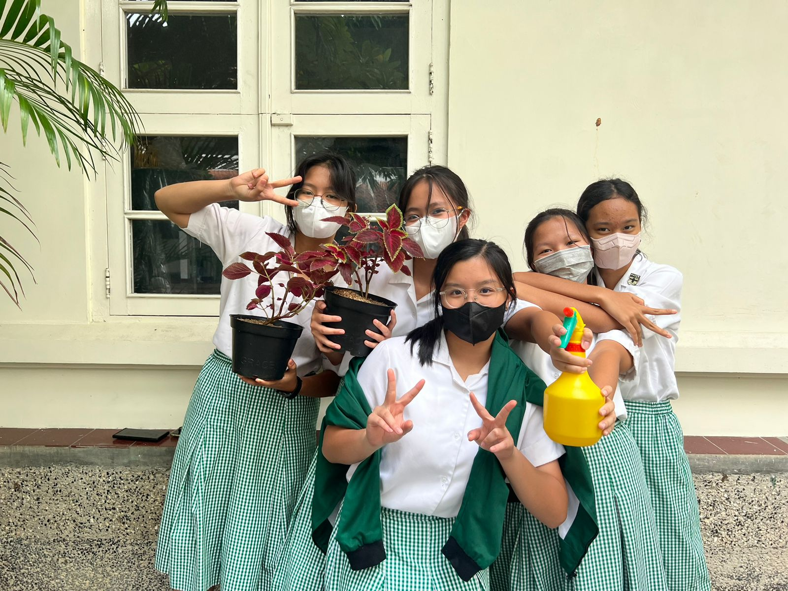

DATA PENULIS
 |
Nama Penulis: Alexandra Jannice Saputra Kelas/No. Absen: IX-4/1 Tempat, tanggal lahir: Jakarta, 27 November 2007 Jenis Kelamin: Perempuan Agama: Katolik |
 |
Nama Penulis: Isabela Cassandra Kelas/No. Absen: IX-4/14 Tempat, tanggal lahir: Jakarta, 4 Juli 2008 Jenis Kelamin: Perempuan Agama: Katolik |
 |
Nama Penulis: Kaylynn Jacinda Kelas/No. Absen: IX-4/20 Tempat, tanggal lahir: Jakarta, 6 April 2008 Jenis Kelamin: Perempuan Agama: Buddha |
 |
Nama Penulis: Maria Florencia Carla Sutama Kelas/No. Absen: IX-4/24 Tempat, tanggal lahir: Jakarta, 9 Oktober 2008 Jenis Kelamin: Perempuan Agama: Katolik |
 |
Nama Penulis: Shiany Valerie Widodo Kelas/No. Absen: IX-4/33 Tempat, tanggal lahir: Jakarta, 14 Januari 2009 Jenis Kelamin: Perempuan Agama: Katolik |
Playlist - !!
Guess what we made to accompany you scrolling through our report! Yes, we made a playlist full of our top picks!
Gallery -!!

